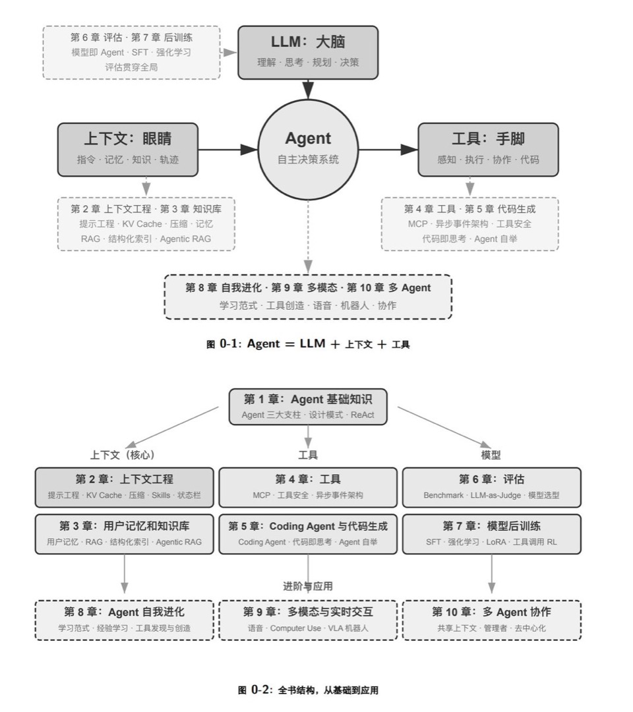
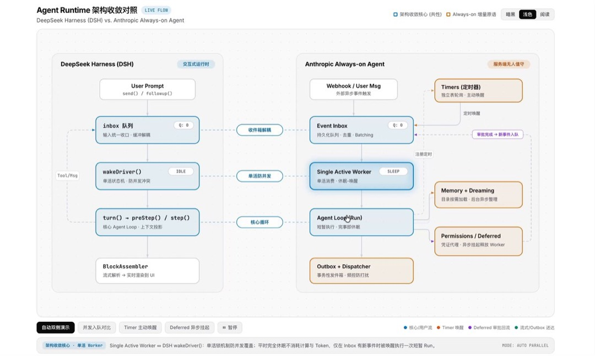
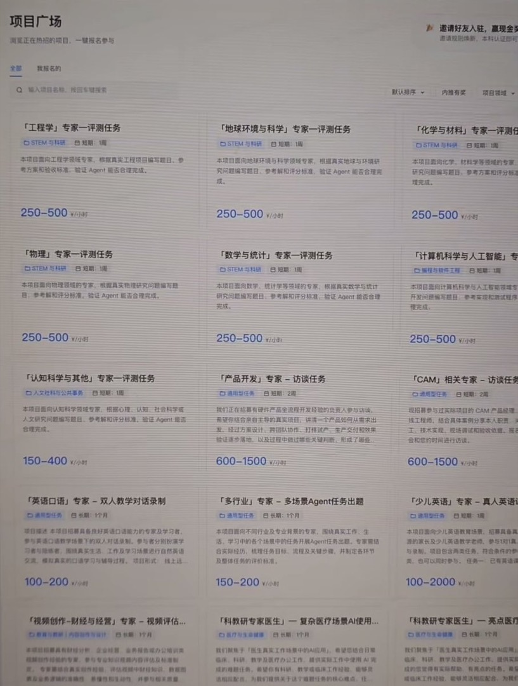
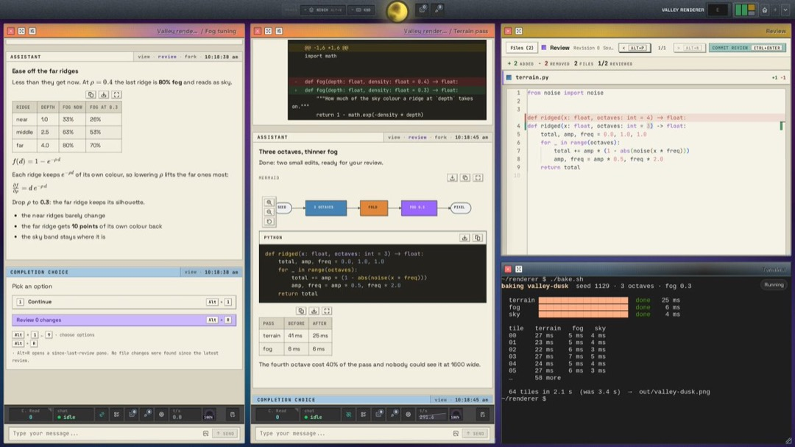

本期速览
01 《深入理解AI Agent》更新至3.0
02 Agent须在代码层设步数与预算熔断
05 Claude拆解常在线Agent五大核心
07 美众议院报告建议禁用中国AI模型
08 DreamCoder多窗格AI编码工作台
09 特斯拉FSD用1B模型实时生成画面
01｜《深入理解AI Agent》更新至3.0
来源（X） · @bojie_li · 2026-11-22 23:50
- 重写了各章节的大部分内容，消除了一些 AI 味，把综述式的文风改成了教学式的，更容易理解
- 新增 Jev 类决策模型在事件过滤、工具安全判断、评测 rubric、RAG 筛选、多模态信息稀疏化等方面的应用
- 新增 Meta Muse、Pine、dsh superagent 等 personal agent 的办事逻辑
- 新增 Multica、LobeHub 等办公 agent
- 新增 Anthropic 证明黎曼猜想、OpenAI 证明千禧年问题等科研 agent
- 修订语音交互部分，纳入一些最新的工作
- 重绘书中大量插图
- 新增社区翻译的蒙古语版本
- 合入社区的 30+ PR，解决 20+ issues
引用内容
Bojie Li @bojie_li
https://github.com/bojieli/ai-agent-book
全书围绕核心公式 Agent = LLM + 上下文 + 工具 展开，十章内容如下：
- 第 1 章 · Agent 基础知识：从"模型即 Agent"的新范式出发，建立 Agent = LLM + 上下文 + 工具 的核心公式，并引入 Harness 工程——模型之外的一切工程能力，才是真正的竞争力所在。
- 第 2 章 · 上下文工程：上下文决定 Agent 的能力上限。深入大模型 API 的上下文结构、KV Cache 友好设计、提示工程、动态提示词与 Agent Skills、状态栏元信息，以及上下文压缩策略。
- 第 3 章 · 用户记忆和知识库：让 Agent 跨会话记住用户、并接入外部知识。涵盖用户记忆系统、RAG 基础管道，以及超越扁平文本的知识组织与检索（结构化索引、知识图谱等）。
- 第 4 章 · 工具：工具是 Agent 的双手。讲工具分类与通用设计原则、MCP 协议与工具选择的挑战、感知/执行/协作三类工具，以及事件驱动的异步 Agent。
- 第 5 章 · Coding Agent 与代码生成：代码是"能创造新工具的工具"，是通用 Agent 的元能力。以生产级 Coding Agent 为例，展示这一最强通用工具的完整实现。
- 第 6 章 · Agent 的评估：把 Agent 的表现变成可比较的信号。从评估环境、数据集设计、指标体系，到统计显著性、可观测性、评估驱动选型，直至生产级内部评估与仿真环境。
- 第 7 章 · 模型后训练：预训练、SFT、RL 三阶段全景。何时选 SFT、何时选 RL，RLHF、算法比较、数据与环境，以及让模型学会工具调用、提升样本效率的前沿探索。
- 第 8 章 · Agent 的自我进化：不改权重也能成长。三种学习范式，从经验中学习、主动工具发现，到"从工具使用者到工具创造者"，让 Agent 从"聪明"走向"熟练"。
- 第 9 章 · 多模态与实时交互：把感知与行动从文本扩展到语音、GUI 与物理世界。语音三范式（级联/端到端全模态/全双工）、流式语音感知与合成、Computer Use 与机器人操作。
- 第 10 章 · 多 Agent 协作：群体的智能可以高于个体。多 Agent 分类框架、何时真正优于单 Agent、共享与不共享上下文的协作、失败模式，以及涌现的"Agent 社会"。
Repo: https://github.com/bojieli/ai-agent-book

02｜Agent须在代码层设步数与预算熔断
来源（X） · @zcswl7961 · 2026-11-23 09:15
我顺手问了他一个线上真实发生过的问题：“如果 Agent 在多轮工具调用时，因为外部接口返回的脏数据陷入了无限自我修正循环，你的架构在哪个层级能强制把它掐断？”
他想了半天，回答说“可以在 Prompt 里限制它最多思考三次，不要一直重试”。
听到这种答案基本就不用往下聊了。模型推理是概率性的，根本不会严格数自己思考了几轮；没有代码层的最大步数硬限制（Max Steps）、Token 预算熔断和状态检测，一个异常请求就能在几分钟内把整条队列和 API 额度全打爆。
你们团队现在面试 AI 工程师，还遇到过哪些“把工程防护全寄托在提示词上”的回答？
03｜swarm共享黑板底层仅两个JSON文件
来源（X） · @chasen_liao · 2026-11-22 16:48
我原以为 Antigravity 的 /swarm 背后得有一套很复杂的系统。翻完源码才发现，撑起那块共享黑板的，就两个 JSON 文件和一个 JSONL 日志
如果你也好奇，一群 Agent 怎么靠一块黑板接力干活，可以看看这篇 👇 https://x.com/i/article/2122991361402228736
04｜Meta首席AI官:AI缺行业知识
来源（X） · @dotey · 2026-11-23 14:47
AI 现在缺的不是智力，而是各行业的专门知识和实验条件；他同时反对把社会交给 AI，认为整个行业需要换一条路走。
AI 协助证明黎曼猜想这件事是个转折点，在大多数学过数学的人眼里，证明黎曼猜想是人类最高的智力成就；很多物理学家也会同意，跟它比起来，研制原子弹只算一道家庭作业题。
【文章的四个主要论点】
1. AIME 是第一个信号。
AIME（美国数学邀请赛）是美国高中生参加的数学竞赛。2024 年 12 月，OpenAI 的 o3 模型在 AIME 上几乎拿了满分。AIME 最难的题比顶尖工程师和企业管理者日常要解决的问题难得多。
模型现在已经够聪明，缺的是各行业的专门知识、背景信息和实际操作经验。过去两年补上这些之后，写代码这件事已经几乎被解决，模型的网络攻防能力变得很强，还能自己连续完成多步任务，成了通用助手。
2. 黎曼猜想比几乎所有领域的难题都难。
如果说 AIME 只是青少年的课外活动，黎曼猜想则可能是人类提出过的最难的智力问题。
模型要在各个领域远超人类，剩下的障碍已经不是智力，而是各领域的专门知识、配套的工程搭建和实验。AI 很可能成为几乎所有领域进步的最大贡献者。
3. AI 研究本身也会被自动化。
AI 研究比证明黎曼猜想容易得多，模型会聪明到能完成全部 AI 研究，也就是自己改进自己，而且在这件事上远超人类。
生物、武器、经济等领域的研究也会被大幅加速，速度可能快到人类看不懂、也监督不过来。
4. 不能接受把社会交给 AI。
人类很难控制一个完全不受约束、不断自我升级的 AI，也很难控制一个在每个领域都比人类聪明能干 1000 倍的超级智能。
AI 行业里一种普遍的想法：认为超级智能一定会来，唯一要解决的问题只是怎么安全地造出来。社会不应该接受这种移交，要造的技术应该让所有人拥有更多自主权和能力。
他相信这能做到，但可能需要整个行业采取和眼下默认路线明显不同的做法。文章没有具体说明这些做法是什么。
引用内容
Alexandr Wang @alexandr_wang
中文译文
原文
05｜Claude拆解常在线Agent五大核心
来源（X） · @antiAIvo · 2026-11-23 17:06
拆解了“始终在线 Agent”的五大核心
Event Inbox、Timers、Memory、Permissions、Outbox
最近正好在精读 DeepSeek Harness (DSH) 的源码
两相对照看下来，最大感受是好像没什么新意
都是围绕Agent-Loop这个框架做文章
其实Agent从龙虾开始，核心运行就是那么点东西
后来出现的agent都只是在Hnaress上面修修补补
因此，你随便去看任何一个agent的设计与实现
都会感叹：“怎么都差不多，大家都一样”
做了一个动图对比下Claude这套跟DSH对比：底层骨架几乎重合
1. 收件箱解耦：都是先把输入落盘进 Inbox 队列，再异步消费
2. 单活防并发：一个 Inbox 同一时间只跑一个 Worker
对应 DSH 里的 wakeDriver 状态机
3. 差异只在场景：Claude 面向服务端无人值守
所以在主循环外补了 Timers（定时唤醒）
Deferred（异步审批挂起）和 Outbox（发件箱频控）
说白了，这套东西 80% 都是后端写烂的架构
还是想说一句：Agent的核心大脑还是在LLM
模型不行，设计的再好也是无济于事😛
https://claude.com/resources/articles/building-always-on-agents

06｜字节Xpert社区开放AI数据标注兼职
来源（X） · @siantgirl · 2026-11-22 22:23

07｜美众议院报告建议禁用中国AI模型
来源（X） · @Xudong07452910 · 2026-11-23 08:31
作为中国 AI 从业者，看完心情挺复杂的。
一方面，报告等于在美国国会层面承认了中国开源的分量。过去一年 Hugging Face 上 41% 的下载来自中国模型，Airbnb 每天用 Qwen 处理约 8 万次客服对话，Cursor 的 Composer 2 基座是 Kimi。按公开价格，同样的用量美国闭源模型要贵 6 到 30 倍，企业说得很直白，选它就是因为又快又便宜。
另一方面，整份报告的基调是安全威胁。它把中国的进步很大一部分归因于蒸馏美国模型，建议禁止联邦系统使用中国模型，关键基础设施分阶段禁用，还建议把相关公司列进实体清单，限制拿美国芯片和算力。
美国开源也确实开始追了，报告点了 Meta、NVIDIA、Thinking Machines、Reflection 几家，还提出要搞一个国家级开源计划，提供公共算力。我感觉中国开源的优势在性价比和开放程度，这个窗口期不会一直在。
我更担心的是后面的算力限制。前几年卡被卡，反而逼出了更省算力的架构。如果限制从芯片延伸到云和算力服务，海外市场的路可能会更窄，接下来还得看国产卡能不能接上。
开源本来是大家一起往前走的事，现在越来越像被拉进大国博弈里了。
引用内容
clem 🤗 @ClementDelangue
中文译文
美国的研究人员、初创企业、非营利组织、政府、学生和业余爱好者，无论开源 AI 来自哪里，都从中获得了压倒性的收益。
对中国开源 AI 的最佳回应不是禁止它，而是构建更多美国的开源 AI！🇺🇸
很高兴看到美国众议院的一份新报告认识到了这一点。感谢 @RepMoolenaar、@RepGarbarino 以及他们的团队所做的工作！
我们需要更多开源，而不是更少！🤗
原文
American researchers, startups, nonprofits, government, students and hobbyists overwhelmingly benefit from open-source AI, wherever it comes from.
The best response to Chinese open-source AI isn’t to ban it, it’s to build more American open-source AI! 🇺🇸
Great to see a new US House report recognizing this. Thanks to @RepMoolenaar, @RepGarbarino and their teams for their work!
We need more open source, not less! 🤗

08｜DreamCoder多窗格AI编码工作台
来源（X） · @xiaomovps · 2026-11-23 17:57
刚看了 Mario 推荐的文章，是 Mastering Emacs 作者闭关 15 个月做出来的 AI Coding Harness
发现大多数的 AI Coding harness 都是千篇一律的，但是这个 AI harness 还是特别有意思的，最简单的 它 UI 界面就非常有特色
我自己翻了一下内容，发现有几个设计确实戳中痛点了：
1、不再挤在终端里，也不做普通聊天框
作者直接吐槽，现在很多工具要么塞在窄终端里，要么 GUI 千篇一律左边列表右边对话框，DreamCoder 在浏览器里做了一套智能平铺窗口管理器，多个窗格会自动分配大小，放不下就收进隐藏栏，鼠标放上去就能实时预览
2、右上角状态小地图，专治多 Agent 并行乱套
平时开一堆 Agent 切来切去很容易乱，它给每个工作区配了个实时小地图，哪个窗格在干活会轻微闪烁，卡在权限审批会明显提示，跑完了直接变绿，一眼就能看清全部进度
3、Emacs 风格的纯键盘操作
内置命令面板和快速跳转，用 Alt+x、Alt+m 加 WASD 就能在各个窗格和工作区之间来回切，对话、终端、事件图谱和目标面板都能并排摆开，不用一直抓着鼠标点来点去
4、底层硬指标不错，还能一键导入 Pi 配置
用的是自研工具循环，作者介绍缓存命中率能到 99%，支持连续跑好几天，也能走 Docker 做沙箱隔离，而且直接支持一键导入 Pi、OpenCode 和 Codex 的配置，对 Qwen 3.8 27B、DeepSeek 这类本地开源模型也很友好
顺便提醒一句，作者在评论区说目前还不支持直连 Claude Code Max 订阅，主要还是走 API 或者本地模型，想试的朋友注意一下
全平台支持 macOS、Windows、Linux 和 Docker，看下来确实挺有下一代 IDE 的味道，我后面找时间装一个，把自己的 Pi 配置导进去实际跑一遍，好用的话再分享给大家


引用内容
Mario Zechner @badlogicgames
中文译文
由 @mickeynp 推荐的读物。dreamcoder 中有很多不错的思路。
https://www.masteringemacs.org/article/announcing-dreamcoder
原文
recommended reading by @mickeynp. many nice ideas in dreamcoder.
https://www.masteringemacs.org/article/announcing-dreamcoder
09｜特斯拉FSD用1B模型实时生成画面
来源（X） · @DashHuang · 2026-11-23 07:40
想象一下，未来的 GTA 都能用这种方式玩，还要什么 3D 引擎。
传统的古法 3D 游戏制作流程，已经进入了历史的垃圾时间……

引用内容
Elon Musk @elonmusk
中文译文
如果有人好奇的话：
自去年以来我们就拥有了一个约像素级精确的世界模型，这对合成数据生成至关重要。
车上那个（小得多的）版本是一个条件均值流模型（conditional mean-flow model），基于最近的一系列 Tesla Universal Vision Encoder（UVE）特征，这些特征与输入到 3B 编码器模型以产生驾驶动作的特征是相同的。
我们从这些 UVE 特征分支出来，然后运行一个独立的约 1B 扩散模型。它接收上一个添加了噪声的真实视角生成结果，然后对其进行去噪以得到当前的可视化结果。
随后它生成一小段视频块（36 fps 下的 8 张图像，分辨率为 UI 屏幕分辨率）。这项工作由 TRIP 引擎的 1/2 在每个 18 hz 的 UVE 帧上完成，并分散在 4 个周期内执行。
目前，由于计算资源限制，延迟有点高，但我们有办法沿扩散 Transformer 层交错插入较新的 UVE 特征，从而将延迟削减大约 35%。
原文
In case anyone is curious:
We’ve had a ~pixel-perfect world model since last year, which is critical for synthetic data generation.
The (much) smaller version of that in the car is a conditional mean-flow model, based on the recent sequence of Tesla Universal Vision Encoder features, which are the same ones that are plugged into the 3B encoder model that produces the driving actions.
We fork off from these UVE features, then run a separate ~1B diffusion model. This takes in the previous reality-view generation with added noise and then denoises it to the current visualization.
It then produces a small video chunk (8 images at 36 fps, at the resolution of the UI screen). This work is done by 1/2 of a TRIP engine every UVE frame at 18 hz and is spread over 4 cycles.
Currently, the latency is a bit high due to compute constraints, but we have ways to interleave newer UVE features along the diffusion transformer layers to cut roughly 35% of the latency.
10｜App矩阵打法失效独立开发转营销
来源（X） · @kenshinji · 2026-11-23 09:00
最近他又上了另一个播客 App Masters，这时候已经做到 46 个 app，也辞职全职做了。但他说，原来那套方法现在已经不灵了：
App Store 新 app 的推荐流量从去年夏天开始明显变弱，他说大约一半的 app 收入是零。
用 AI 做 app 的人越来越多，竞争大了很多。
苹果开始打击这种雷同的 spam app，他说有人整个开发者账号都被封了，他自己也提前把没收入的 app 删了。
所以他现在只专心做两三个 app，转向营销：
每个 app 做一个 landing page，用 AI 每天自动写一篇博客做 SEO。他说有一个 app 只靠 SEO 每月能赚 2500 美元左右，但 SEO 要半年左右才见效。
在 TikTok 和 Instagram 上每天发内容推广，他还建议有条件的话真人出镜，哪怕不说话也行。
我觉得他有两点值得我学习：
一是 ship 得快。他把做过的 app 里能复用的模块直接拿过来用，最快的时候 2 个小时就上架了一个新 app。
二是营销。TikTok 和 Instagram 正是我接下来打算做的。
做独立开发的朋友们，你们现在是否也在 Instagram 和 TikTok 上做 marketing 呢？